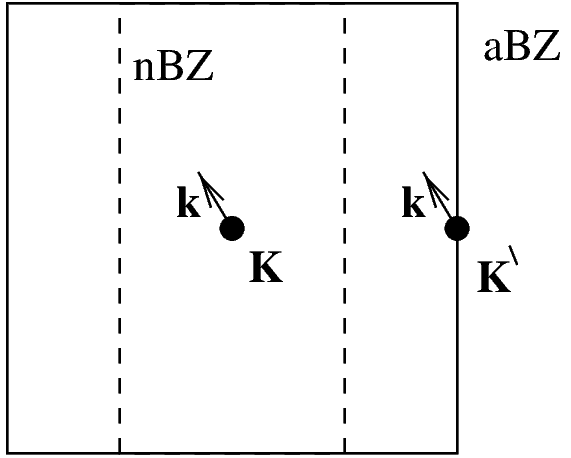

2 Periodische Störungen im Rahmen der \bm{k}\cdot \bm{p}-Theorie {#sec-periodstoer}
In diesem Kapitel soll die allgemeine Theorie für die Verallgemeinerung der \bm{k}\cdot \bm{p}-Theorie auf periodische Störungen vorgestellt werden. Dazu wollen wir zunächst die Standard \bm{k}\cdot \bm{p}-Theorie skizzieren, wie sie etwa bei Kane (1966) zu finden ist, und danach die nötigen Verallgemeinerungen vornehmen.
2.1 Standard \bm{k}\cdot \bm{p}-Theorie
Im Rahmen der \bm{k}\cdot \bm{p}-Theorie wird normalerweise das Problem eines Elektrons in einem periodischen Potential behandelt, d.h. die stationäre Schrödinger-Gleichung mit dem Hamilton-Operator
H_{0} = \frac{\bm{p}^{2}}{2m} + V_{0}(\bm{r}).
Dabei ist \bm{p} der Impulsoperator, V_{0}(\bm{r}) das ortsabhängige Kristallpotential und m die Masse des freien Elektrons. Gesucht sind dann die Eigenfunktionen \psi_{n} und Energieeigenwerte \varepsilon_{n} des Eigenwertproblems
H_{0} \psi_{n} = \left[ \frac{\bm{p}^{2}}{2m} + V_{0}(\bm{r}) \right] \psi_{n} = \varepsilon_{n} \psi_{n} . \qquad(2.1)
Das Bloch-Theorem besagt, daß sich \psi_{n} als
\psi_{n} \equiv \psi_{n\bm{\kappa}}(\bm{r}) = e^{i\bm{\bm{\kappa}} \cdot \bm{r}} u_{n\bm{\kappa}}(\bm{r}) \qquad(2.2)
schreiben läßt, wobei u_{n\bm{\kappa}}(\bm{r}) die selbe Periodizität wie V_{0}(\bm{r}) hat und \bm{\kappa} ein Wellenvektor aus der ersten Brillouin-Zone ist. Betrachten wir die Zustände mit verschiedenem Bandindex n aber \bm{\kappa}_{0} aus der ersten Brillouin-Zone, so bilden sie eine vollständige Basis. Luttinger und Kohn (1955) haben gezeigt, daß auch {\phi_{n \bm{\kappa}}}= e^{i\bm{\bm{\kappa}} \cdot \bm{r}} e^{i\bm{\bm{\kappa}_{0}} \cdot \bm{r}} u_{n\bm{\kappa}_{0}}(\bm{r}) \qquad(2.3)
eine orthonormale und vollständige Basis bilden. Wir können also die gesuchte Lösung \psi_{n} in die {\phi_{n \bm{\kappa}}} zu einem \bm{\kappa}_{0} entwickeln
\psi_{n} = \sum_{{n^{\prime}}} \int d^{3}\!\!\: {\kappa}\, c_{n{n^{\prime}}}(\bm{\kappa}) {\phi_{{n^{\prime}} \bm{\kappa}}}. \qquad(2.4)
Setzen wir nun die Entwicklung Gl. 2.4 in die stationäre Schrödinger-Gleichung Gl. 2.1 ein, so stellen wir fest, daß sich die Energieeigenwerte \varepsilon_{n} mit dem Wellenvektor \bm{\kappa} charakterisieren lassen. Dies war auf Grund des Bloch-Theorems auch zu erwarten, und wir erhalten die bekannte \bm{k}\cdot \bm{p}-Gleichung
\left( \varepsilon_{n}(\bm{\kappa}_{0}) + \frac{\hbar^{2}}{2m}{\kappa}^{2} \right) c_{nn}(\bm{\kappa}) + \sum_{{n^{\prime}}} \frac{\hbar}{m} \bm{\bm{\kappa}} \cdot \bm{{\bm{p}_{\mathnormal{n{n^{\prime}}}}}} c_{n{n^{\prime}}}(\bm{\kappa}) = \varepsilon_{n}(\bm{\kappa}) c_{nn}(\bm{\kappa}) \qquad(2.5)
mit den Impulsmatrixelementen
{\bm{p}_{\mathnormal{n{n^{\prime}}}}}:= {\frac{(2\pi)}{\Omega_{0}}}^{3} \int d^{3}\!\!\: r\, e^{-i\bm{\bm{\kappa}_{0}} \cdot \bm{r}} u_{n\bm{\kappa}_{0}}^{\ast} \, \bm{p} \, e^{i\bm{\bm{\kappa}_{0}} \cdot \bm{r}} u_{{n^{\prime}}\bm{\kappa}_{0}}. \qquad(2.6)
Dabei geht das Integral über die Einheitszelle mit Volumen \Omega_{0}.1
Gl. 2.5 ist äquivalent zur Schrödinger-Gleichung Gl. 2.1, von der wir ausgegangen sind. Um nun Gl. 2.5 zu lösen, benötigen wir alle Eigenenergie \varepsilon_{n}(\bm{\kappa}_{0}) am Entwicklungspunkt \bm{\kappa}_{0}, sowie alle Impulsmatrixelemente {\bm{p}_{\mathnormal{n{n^{\prime}}}}} zwischen diesen Zuständen. Wir haben es dabei aber mit einem unendlich-dimensionalen Gleichungssystem zu tun, weshalb normalerweise Gl. 2.5 für kleine Werte von {\kappa} störungstheoretisch behandelt wird. Das bekannteste Ergebnis solch einer Rechnung, die Gleichung für die efffektive Masse der Elektronen, erhalten wir, wenn wir für ein nichtentartetes Band an einem Extremum der Energiedispersion bis zur zweiten Ordnung in {\kappa} entwickeln:
E(\bm{\kappa}) = \varepsilon_{n}(\bm{\kappa}_{0}) + \frac{\hbar^{2}}{2m}{\kappa}^{2} + \left(\frac{\hbar}{m}\right)^{2} \sum_{{n^{\prime}}} \frac{|\bm{\bm{\kappa}} \cdot \bm{{\bm{p}_{\mathnormal{n{n^{\prime}}}}}}|^{2}}{\varepsilon_{n}(\bm{\kappa}_{0})-\varepsilon_{{n^{\prime}}}(\bm{\kappa}_{0})} \qquad(2.7)
Oft reicht es nicht aus, sich wie in Gl. 2.7 nur auf ein nichtentartetes Band zu beschränken. Eine systematische Möglichkeit die außerdiagonalen Störungen in Gl. 2.5 zu berücksichtigen bietet die Löwdin Störungstheorie (Löwdin 1951). Dieses Verfahren können wir uns so vorstellen, daß die Schritte, die normalerweise bei einer (pseudo-)entarten Störungstheorie in der Quanten-Mechanik durchgeführt werden müssen, in umgekehrter Reihenfolge durchgeführt werden. Es werden zunächst die Einflüsse der energetisch weit entfernten Zustände berücksichtigt und erst dann die verbliebene Matrix für den (pseudo-)entarteten Unterraum diagonalisiert. Da die Reihenfolge der Schritte umgekehrt wurde, führt der erste Schritt auch zu Veränderungen in den Kopplungskonstanten, d.h. in den Ausserdiagonaltermen der verbleibenden Matrix, die bei normaler (pseudo-)-entarteter Störungstheorie nicht auftreten.
Formal bedeutet dies, daß die Zustände unseres Systems in zwei Gruppen aufgeteilt werden. Die Zustände in Gruppe \mathsf{A} sind diejenigen, die uns interessieren und deren Wechselwirkungen wir exakt behandeln wollen. Die Zustände in Gruppe \mathsf{B} haben nur eine schwache Wechselwirkung mit denen in \mathsf{A}. Diese Wechselwirkung wird in Störungstheorie berücksichtigt. Dabei wird die Wechselwirkungsmatrix H_{i j} der Zustände in \mathsf{A} wie folgt abgeändert:2
\tilde{H}_{ij} = H_{ij} + \frac{1}{2} \sum_{\beta \in \mathsf{B}} H_{i \beta} H_{\beta j} \left( \frac{1}{E_{i}-E_{\beta}} + \frac{1}{E_{j}-E_{\beta}} \right) + \dots
Dadurch erhalten wir ein endliches Gleichungssystem, das es uns ermöglicht, die Entwicklungskoeffizienten c_{n{n^{\prime}}}(\bm{\kappa}) mit n \in \mathsf{A} zu bestimmen und aus diesen dann die Entwicklungskoeffizienten für n \in \mathsf{B} zu erhalten.
Sollen im Rahmen der Standard \bm{k}\cdot \bm{p}-Theorie Valenzband-Zustände beschrieben werden, so müssen wir meist die Spin-Bahn-Wechselwirkung berücksichtigen. Diese führt zu einem zusätzlichen Term der Form H_{\text{SO}} = \frac{\hbar}{4m^{2}c^{2}} (\bm{\sigma} \times \nabla V) \cdot \bm{p} \qquad(2.8) im Hamilton-Operator. Dabei ist \bm{\sigma} der Vektor der Pauli-Spin-Matrizen und V das Kristallpotential.
Dieser Term wird normalerweise störungstheoretisch so behandelt, daß er im Unterraum entarteter Zustände diagonalisiert wird. Dadurch erhöht sich die Anzahl der notwendigen Parameter nur um die jeweiligen Spin-Bahn-Aufspaltungen (Kane 1966). Für die Wechselwirkung mit anderen Zuständen müssen wir nur von den {\bm{p}_{\mathnormal{n{n^{\prime}}}}} zu \bm{\pi}_{\mathnormal{n{n^{\prime}}}} übergehen, die sich in ihrer Definition darin unterscheiden, daß in Gl. 2.6 \bm{p} durch \bm{p} + \frac{\hbar}{4mc^{2}} (\bm{\sigma} \times \nabla V) ersetzt werden muß (Luttinger und Kohn 1955).
Verzerrungen auf Grund äußeren Drucks lassen sich mit der Invarianten-Theorie berücksichtigen, wie sie Bir und Pikus (1974) entwickelt haben.
Bei Störungen, die die Periodizität des Kristalls brechen, wie z.B. flache Störstellen oder Magnetfelder, können wir zur Envelopfunktionsnäherung (EFA) (Luttinger und Kohn 1955) übergehen, und so eine gute Beschreibung der auftretenden Phänomene finden. Die dabei erhaltenen Gleichungen sind nicht mehr diagonal in \bm{\kappa}. Vielmehr kommt es zu Wechselwirkungen zwischen Zuständen in der Umgebung des Entwicklungspunktes \bm{\kappa}_{0}.
Wie wir gesehen haben, ist die Standard \bm{k}\cdot \bm{p}-Theorie auf ein große Anzahl von Problemen anwendbar, oder aber es bestehen Erweiterungen wie die EFA. Dies ist nicht der Fall für periodischen und insbesondere kommensurable Störungen,3 wie wir sie hier betrachten wollen.
2.2 Wahl der Basis
Zu unserm Gesamtproblem, d.h. ungestörter Kristall plus periodisches Störpotential, gehört eine neue Einheitszelle (nEZ), die größer als die alte Einheitszelle (aEZ) ist. Auf Grund der Kommensurabilität der Störung, lassen sich die Basisvektoren zur neuen Einheitszelle als ganzzahlige Vielfache der alten Basisvektoren schreiben.
Im reziproken Raum drehen sich diese Verhältnisse um. Die neue Brillouin-Zone (nBZ) ist kleiner als die alte Brillouin-Zone (aBZ), und die alten Basisvektoren im reziproken Raum lassen sich als ganzzahlige Linearkombination der neuen Basisvektoren darstellen.
Das bedeutet aber, daß zu den reziproken Gitterpunkten \{{\bm{\mathcal{G}}_{\mathnormal{m}}}\} unseres ungestörten Systems neue Vektoren hinzukommen. Unser Gesamtproblem besitzt also reziproke Gittervektoren \{{\bm{G}_{\mathnormal{m}}}\}, wobei \{{\bm{\mathcal{G}}_{\mathnormal{m}}}\} eine Teilmenge von \{{\bm{G}_{\mathnormal{m}}}\} ist.
Die neuen reziproken Gittervektoren führen dazu, daß an jedem Punkt der neuen Brillouin-Zone Zustände zu finden sind, die von verschiedenen Punkten der alten Brillouin-Zone kommen. Dieser Vorgang ist auch als (Rück-)Faltung von Zuständen bekannt. Diese auf einen Punkt im reziproken Raum zurückgefalteten Zustände werden i.A. auch wechselwirken, und die sich daraus ergebenden Effekte wollen wir untersuchen. Schwierigkeiten mit der Standard \bm{k}\cdot \bm{p}-Theorie ergeben sich, weil die rückgefalteten Zustände aus der gesamten alten Brillouin-Zone stammen können. Es können also Zustände wechselwirken, deren Abstand im reziproken Raum ursprünglich vergleichbar zur Gitterkonstante im reziproken Raum ist. Da wir aber in Standard \bm{k}\cdot \bm{p}-Theorie nur einen Punkt im reziproken Raum exakt beschreiben, die Umgebung dieses Punktes aber in Störungstheorie, ist unsere Beschreibung weit entfernter Zustände schlecht. Dies könnten wir nur dadurch umgehen, daß wir zu viele Bänder umfassenden \bm{k}\cdot \bm{p}-Modellen übergehen (Wang und Zunger 1996).
Wir wollen hier einen anderen Ansatz wählen, indem wir von vornherein von einer anderen Basis ausgehen, die dem hier betrachteten Problem besser angepaßt ist.
Ausgangspunkt ist das ungestörtes Problem H_{0}\psi_{n\bm{\kappa}}(\bm{r}) = \varepsilon_{n}(\bm{\kappa}) \psi_{n\bm{\kappa}}(\bm{r}), \qquad(2.9) dessen Lösungen \psi_{n\bm{\kappa}}(\bm{r}) mit Eigenenergien \varepsilon_{n}(\bm{\kappa}) bekannt seien. Dabei ist \bm{\kappa} aus der alten Brillouin-Zone, die durch die reziproken Gittervektoren {{\bm{\mathcal{G}}_{\mathnormal{m}}}} definiert wird.
Dieses System werde nun durch ein periodisches Potential H_{1} gestört, das kommensurabel zur Periodizität des ungestörten Problems sein soll. H_{1} läßt sich also als H_{1} = \sum_{m} \rho_{m} e^{i\bm{{\bm{G}_{\mathnormal{m}}}} \cdot \bm{r}} \qquad(2.10) mit Entwicklungskoeffizienten \rho_{m} schreiben, wobei die \{{\bm{G}_{\mathnormal{m}}}\} wie oben beschrieben alle reziproken Gittervektoren des gestörten Systems umfassen.
Gesucht sind nun Eigenfunktionen \psi und Energieeigenwerte E zur stationären Schrödingergleichung des gestörten Sytems: \left( H_{0} + H_{1} \right) \psi = E \psi \qquad(2.11)
In Analogie zu Gl. 2.3 wählen wir {\chi^{{\bm{\mathcal{K}}}}_{n\bm{k}}}(\bm{r}) = e^{i\bm{\bm{k}} \cdot \bm{r}} \psi_{n{\bm{\mathcal{K}}}}(\bm{r}) = e^{i\bm{\bm{k}} \cdot \bm{r}} e^{i\bm{{\bm{\mathcal{K}}}} \cdot \bm{r}} u_{n{\bm{\mathcal{K}}}}(\bm{r}) \qquad(2.12) als Basis. Dabei ist \bm{k} ein Wellenvektor aus der neuen Brillouin-Zone, während \{{\bm{\mathcal{K}}}\} ein Satz von Wellenvektoren aus der alten Brillouin-Zone ist.
Wir verwenden also die Lösungen \psi_{n{\bm{\mathcal{K}}}}(\bm{r}) der ungestörten Schrödinger-Gleichung Gl. 2.9 von mehreren Punkten der alten Brillouin-Zone als Basis. Welche Punkte wir benötigen, d.h. welche Punkte der alten Brillouin-Zone im Satz \{{\bm{\mathcal{K}}}\} enthalten sein müssen, hängt davon ab, welchen Punkt der neuen Brillouin-Zone wir beschreiben wollen. Wir wollen hier die Zustände im Zentrum der neuen Brillouin-Zone untersuchen und müssen deshalb diejenigen reziproken Gittervektoren des gestörten Systems {\bm{G}_{\mathnormal{m}}} verwenden, die innerhalb der alten ersten Brillouin-Zone liegen.4 Es ist leicht zu sehen, daß e^{i\bm{{\bm{\mathcal{K}}}} \cdot \bm{r}} mit diesem Satz von Entwicklungspunkten {\bm{\mathcal{K}}} periodisch bezüglich der neuen Einheitszelle ist.
Abb. 2.1 zeigt ein einfaches zweidimensionales Beispiel zur Illustration der von uns gewählten Basisfunktionen.

Die Funktionen {\chi^{{\bm{\mathcal{K}}}}_{n\bm{k}}}(\bm{r}) stellen eine geeignete Basis dar, da sie vollständig und orthonormal sind.
Um die Vollständigkeit zu zeigen, verwenden wir, daß die Bloch-Zustände Gl. 2.2 eine vollständige Basis bilden, d.h. jede Funktion f(\bm{r}) kann nach Bloch-Zuständen entwickelt werden \begin{aligned} f(\bm{r}) & = \sum_{n} {\int\limits_{\scriptscriptstyle \text{aBZ}}} d^{3}\!\!\: {\kappa}\, g_{n}(\bm{\kappa}) e^{i\bm{\bm{\kappa}} \cdot \bm{r}} u_{n\bm{\kappa}}(\bm{r}) \\ & = \sum_{{\bm{\mathcal{K}}}\,n} \: {\int\limits_{\scriptscriptstyle \text{nBZ}}} d^{3}\!\!\: {k}\, \underbrace{g_{n}(\bm{k}+{\bm{\mathcal{K}}})}_{\textstyle =: g_{n}^{{\bm{\mathcal{K}}}}(\bm{k})} e^{i\bm{\bm{k}} \cdot \bm{r}} \underbrace{e^{i\bm{{\bm{\mathcal{K}}}} \cdot \bm{r}} u_{n\bm{\bm{k}+{\bm{\mathcal{K}}}}}(\bm{r})}_{\text{periodisch in nEZ}}. \end{aligned} Da die beiden letzten Terme periodisch in nEZ sind, können wir sie nach den periodischen Funktionen e^{i\bm{{\bm{\mathcal{K}}}} \cdot \bm{r}} u_{n\bm{{\bm{\mathcal{K}}}}} entwickeln e^{i\bm{{\bm{\mathcal{K}}}} \cdot \bm{r}} u_{n \bm{k}+{\bm{\mathcal{K}}}} = \sum_{{{\bm{\mathcal{K}}}^{\prime}}\,{n^{\prime}}} b^{{\bm{\mathcal{K}}}{{\bm{\mathcal{K}}}^{\prime}}}_{n {n^{\prime}}} \! (\bm{k}) \, e^{i\bm{{{\bm{\mathcal{K}}}^{\prime}}} \cdot \bm{r}} u_{{n^{\prime}} \bm{{{\bm{\mathcal{K}}}^{\prime}}}} , mit den Entwicklungskoeffizienten b^{{\bm{\mathcal{K}}}{{\bm{\mathcal{K}}}^{\prime}}}_{n {n^{\prime}}} \! (\bm{k}). Damit ergibt sich: f(\bm{r}) = \sum_{{\bm{\mathcal{K}}}\,n} \: {\int\limits_{\scriptscriptstyle \text{nBZ}}} d^{3}\!\!\: {k}\, \tilde{g}_{n}^{{\bm{\mathcal{K}}}}(\bm{k}) {\chi^{{\bm{\mathcal{K}}}}_{n\bm{k}}} \qquad \text{mit} \quad \tilde{g}_{n}^{{\bm{\mathcal{K}}}}(\bm{k}) = \sum_{{{\bm{\mathcal{K}}}^{\prime}}\,{n^{\prime}}} b^{{{\bm{\mathcal{K}}}^{\prime}} {\bm{\mathcal{K}}}}_{{n^{\prime}} n} \! (\bm{k}) \, g_{{n^{\prime}}}^{{{\bm{\mathcal{K}}}^{\prime}}}(\bm{k}) Wir sind also in der Lage jede beliebige Funktion f(\bm{r}) nach den Basisfunktionen {\chi^{{\bm{\mathcal{K}}}}_{n\bm{k}}} zu entwickeln, was bedeutet, daß diese vollständig sind.
Als nächstes wollen wir die Orthonormalität der Basisfunktionen {\chi^{{\bm{\mathcal{K}}}}_{n\bm{k}}} zeigen, die durch die folgende Relation ausgedrückt wird: {\int\limits_{\scriptscriptstyle \text{Kristall}}}\!\!\!\! d^{3}\!\!\: r\, {{\chi^{{\bm{\mathcal{K}}}}_{n\bm{k}}}}^{\ast} {\chi^{{{\bm{\mathcal{K}}}^{\prime}}}_{{n^{\prime}}{\bm{k}^{\prime}}}}= {\delta_{{\bm{\mathcal{K}}}\,{{\bm{\mathcal{K}}}^{\prime}}}} {\delta_{n\,{n^{\prime}}}} \delta(\bm{k}-{\bm{k}^{\prime}}) \qquad(2.13) Daß dies erfüllt ist, zeigt sich folgendermaßen: \begin{aligned} {\int\limits_{\scriptscriptstyle \text{Kristall}}}\!\!\!\! d^{3}\!\!\: r\, {{\chi^{{\bm{\mathcal{K}}}}_{n\bm{k}}}}^{\ast}{\chi^{{{\bm{\mathcal{K}}}^{\prime}}}_{{n^{\prime}}{\bm{k}^{\prime}}}}& = {\int\limits_{\scriptscriptstyle \text{Kristall}}}\!\!\!\! d^{3}\!\!\: r\, e^{i\bm{({k^{\prime}}-k)} \cdot \bm{r}} \underbrace{e^{i\bm{({{\bm{\mathcal{K}}}^{\prime}}-{\bm{\mathcal{K}}})} \cdot \bm{r}} u_{n{\bm{\mathcal{K}}}}^{\ast}u_{{n^{\prime}}{{\bm{\mathcal{K}}}^{\prime}}}}_{\text{periodisch in nEZ}} \\ &= (2\pi)^{3} \sum_{m} {B_{\!\!\!{n{n^{\prime}} \atop {\bm{\mathcal{K}}}{{\bm{\mathcal{K}}}^{\prime}}}}^{m}} \delta({\bm{k}^{\prime}}-\bm{k}-{\bm{G}_{\mathnormal{m}}}) \\ &= (2\pi)^{3} {B_{\!\!\!{n{n^{\prime}} \atop {\bm{\mathcal{K}}}{{\bm{\mathcal{K}}}^{\prime}}}}^{0}} \delta({\bm{k}^{\prime}}-\bm{k}) \end{aligned} \qquad(2.14)
Der letzte Schritt ist richtig, da \bm{k} und {\bm{k}^{\prime}} aus der neuen Brillouin-Zone sind, die durch die {\bm{G}_{\mathnormal{m}}} definiert ist. Dabei haben wir eine Fourier-Transformation durchgeführt e^{i\bm{({{\bm{\mathcal{K}}}^{\prime}}-{\bm{\mathcal{K}}})} \cdot \bm{r}} u_{n{\bm{\mathcal{K}}}}^{\ast}u_{{n^{\prime}}{{\bm{\mathcal{K}}}^{\prime}}} = \sum_{m} {B_{\!\!\!{n{n^{\prime}} \atop {\bm{\mathcal{K}}}{{\bm{\mathcal{K}}}^{\prime}}}}^{m}} e^{-i\bm{{\bm{G}_{\mathnormal{m}}}} \cdot \bm{r}} \qquad(2.15) deren Koeffizienten {B_{\!\!\!{n{n^{\prime}} \atop {\bm{\mathcal{K}}}{{\bm{\mathcal{K}}}^{\prime}}}}^{m}} durch {B_{\!\!\!{n{n^{\prime}} \atop {\bm{\mathcal{K}}}{{\bm{\mathcal{K}}}^{\prime}}}}^{m}} = \frac{1}{\Omega} {\int\limits_{\scriptscriptstyle \text{nEZ}}} d^{3}\!\!\: r\, e^{i\bm{{\bm{G}_{\mathnormal{m}}}} \cdot \bm{r}} e^{i\bm{({{\bm{\mathcal{K}}}^{\prime}}-{\bm{\mathcal{K}}})} \cdot \bm{r}} u_{n{\bm{\mathcal{K}}}}^{\ast}u_{{n^{\prime}}{{\bm{\mathcal{K}}}^{\prime}}} gegeben sind, wenn \Omega das Volumen der neuen Einheitszelle ist. Für den Spezialfall m=0 gilt {B_{\!\!\!{n{n^{\prime}} \atop {\bm{\mathcal{K}}}{{\bm{\mathcal{K}}}^{\prime}}}}^{0}} = \frac{1}{\Omega} {\int\limits_{\scriptscriptstyle \text{nEZ}}} d^{3}\!\!\: r\, e^{i\bm{({{\bm{\mathcal{K}}}^{\prime}}-{\bm{\mathcal{K}}})} \cdot \bm{r}} u_{n{\bm{\mathcal{K}}}}^{\ast}u_{{n^{\prime}}{{\bm{\mathcal{K}}}^{\prime}}} = \frac{1}{(2\pi)^{3}} {\delta_{{\bm{\mathcal{K}}}\,{{\bm{\mathcal{K}}}^{\prime}}}} {\delta_{n\,{n^{\prime}}}} \qquad(2.16) so daß insgesamt Gl. 2.13 erfüllt ist.
Gl. 2.16 ist ein Spezialfall von {\int\limits_{\scriptscriptstyle \text{nEZ}}}e^{i\bm{k} \cdot \bm{r}}f(\bm{r})d^{3}\!\!\: r\,=0 \qquad(2.17) für Funktionen f(\bm{r}), die periodisch auf aEZ sind, und e^{i\bm{k} \cdot \bm{r}} periodisch auf nEZ aber nicht auf aEZ, d.h. wenn \bm{k} \notin \{{\bm{\mathcal{G}}_{\mathnormal{m}}}\} gilt. Dies wiederum ist nur ein Spezialfall der allgemeinen Aussage, daß {\int\limits_{\scriptscriptstyle \text{Kristall}}}e^{i\bm{k} \cdot \bm{r}}f(\bm{r})d^{3}\!\!\: r\,=0 für gitterperiodische Funktionen f(\bm{r}), wenn \bm{k} kein reziproker Gittervektor ist.
2.3 Ansatz für die Wellenfunktion
Nachdem gezeigt wurde, daß unsere Basisfunktionen {\chi^{{\bm{\mathcal{K}}}}_{n\bm{k}}} eine geeignete Basis für die Entwicklung der Eigenfunktionen \psi in Gl. 2.11 sind, soll nun der Ansatz gemacht werden: \psi = \sum_{{{\bm{\mathcal{K}}}^{\prime}},{n^{\prime}}} {\int\limits_{\scriptscriptstyle \text{nBZ}}} d^{3}\!\!\: {{k}^{\prime}}\, {A^{{{\bm{\mathcal{K}}}^{\prime}}}_{{n^{\prime}}} \! ({\bm{k}^{\prime}}) \,} {\chi^{{{\bm{\mathcal{K}}}^{\prime}}}_{{n^{\prime}}{\bm{k}^{\prime}}}}. Wenn wir dies in Gl. 2.11 einsetzen, so ergibt sich \sum_{{{\bm{\mathcal{K}}}^{\prime}},{n^{\prime}}} {\int\limits_{\scriptscriptstyle \text{nBZ}}} d^{3}\!\!\: {{k}^{\prime}}\, {\langle {{n\,\bm{k}\,{\bm{\mathcal{K}}}}} | {H_{0}+H_{1}} | {{{n^{\prime}}\,{\bm{k}^{\prime}}\,{{\bm{\mathcal{K}}}^{\prime}}}} \rangle} {A^{{{\bm{\mathcal{K}}}^{\prime}}}_{{n^{\prime}}} \! ({\bm{k}^{\prime}}) \,}= E {A^{{\bm{\mathcal{K}}}}_{n} \! (\bm{k}) \,}. \qquad(2.18) Dabei steht {\langle {{n\,\bm{k}\,{\bm{\mathcal{K}}}}} | {H_{0}+H_{1}} | {{{n^{\prime}}\,{\bm{k}^{\prime}}\,{{\bm{\mathcal{K}}}^{\prime}}}} \rangle} für Matrixelemente bezüglich der Basisfunktionen {\chi^{{\bm{\mathcal{K}}}}_{n\bm{k}}}(\bm{r}) = {\langle {\bm{r}} | {{n\,\bm{k}\,{\bm{\mathcal{K}}}}} \rangle}.
2.3.1 Matrixelemente von H_0
Zunächst sollen die Matrixelemente von H_{0} bezüglich der Basisfunktionen {\chi^{{\bm{\mathcal{K}}}}_{n\bm{k}}} untersucht werden. \begin{aligned} & {\langle {{n\,\bm{k}\,{\bm{\mathcal{K}}}}} | {H_{0}} | {{{n^{\prime}}\,{\bm{k}^{\prime}}\,{{\bm{\mathcal{K}}}^{\prime}}}} \rangle} \\ & ={\int\limits_{\scriptscriptstyle \text{Kristall}}}\!\!\!\! d^{3}\!\!\: r\, e^{-i\bm{(\bm{k}+{\bm{\mathcal{K}}})} \cdot \bm{r}} u_{n{\bm{\mathcal{K}}}}^{\ast} H_{0} e^{i\bm{({\bm{k}^{\prime}}+{{\bm{\mathcal{K}}}^{\prime}})} \cdot \bm{r}} u_{{n^{\prime}}{{\bm{\mathcal{K}}}^{\prime}}}\\ %%% & ={\int\limits_{\scriptscriptstyle \text{Kristall}}}\!\!\!\! d^{3}\!\!\: r\, e^{i\bm{({\bm{k}^{\prime}}-\bm{k})} \cdot \bm{r}} e^{-i\bm{{\bm{\mathcal{K}}}} \cdot \bm{r}} u_{n{\bm{\mathcal{K}}}}^{\ast} (H_{0} + \frac{\hbar^{2}}{2m} {{{k}^{\prime}}}^{2} + \frac{\hbar}{m}\bm{{\bm{k}^{\prime}}} \cdot \bm{p}) e^{i\bm{{{\bm{\mathcal{K}}}^{\prime}}} \cdot \bm{r}} u_{{n^{\prime}}{{\bm{\mathcal{K}}}^{\prime}}}\\ %%% & ={\int\limits_{\scriptscriptstyle \text{Kristall}}}\!\!\!\! d^{3}\!\!\: r\, e^{i\bm{({\bm{k}^{\prime}}-\bm{k})} \cdot \bm{r}} \underbrace{e^{-i\bm{{\bm{\mathcal{K}}}} \cdot \bm{r}} u_{n{\bm{\mathcal{K}}}}^{\ast} \left( \varepsilon_{{n^{\prime}}}({{\bm{\mathcal{K}}}^{\prime}}) + \frac{\hbar^{2}}{2m} {{{k}^{\prime}}}^{2} + \frac{\hbar}{m} \bm{{\bm{k}^{\prime}}} \cdot \bm{p} \right) e^{i\bm{{{\bm{\mathcal{K}}}^{\prime}}} \cdot \bm{r}} u_{{n^{\prime}}{{\bm{\mathcal{K}}}^{\prime}}}}_{\text{periodisch in nEZ}}. \end{aligned} Auf Grund der Periodizität in nEZ können wir ähnlich wie beim Schritt von Gl. 2.13 zu Gl. 2.14 vorgehen. Damit erhalten wir \begin{aligned} & {\langle {{n\,\bm{k}\,{\bm{\mathcal{K}}}}} | {H_{0}} | {{{n^{\prime}}\,{\bm{k}^{\prime}}\,{{\bm{\mathcal{K}}}^{\prime}}}} \rangle} \\ %%% & = \delta({\bm{k}^{\prime}}-\bm{k}) {\frac{(2\pi)}{\Omega}}^{3} \!\!\! {\int\limits_{\scriptscriptstyle \text{nEZ}}}\! d^{3}\!\!\: r\, e^{-i\bm{{\bm{\mathcal{K}}}} \cdot \bm{r}} u_{n{\bm{\mathcal{K}}}}^{\ast} \left( \varepsilon_{{n^{\prime}}}({{\bm{\mathcal{K}}}^{\prime}}) + \frac{\hbar^{2}}{2m} {{k}}^{2} + \frac{\hbar}{m} \bm{\bm{k}} \cdot \bm{p} \right) e^{i\bm{{{\bm{\mathcal{K}}}^{\prime}}} \cdot \bm{r}} u_{{n^{\prime}}{{\bm{\mathcal{K}}}^{\prime}}} \\ %%%% & = \delta({\bm{k}^{\prime}}-\bm{k}) \bigg[ {\delta_{n\,{n^{\prime}}}} {\delta_{{\bm{\mathcal{K}}}\,{{\bm{\mathcal{K}}}^{\prime}}}} \left( \varepsilon_{n}({\bm{\mathcal{K}}}) + \frac{\hbar^{2}}{2m} {k}^{2} \right) \\ %%%% & \qquad + \: {\frac{(2\pi)}{\Omega}}^{3} \frac{\hbar}{m} {\int\limits_{\scriptscriptstyle \text{nEZ}}} d^{3}\!\!\: r\, e^{-i\bm{{\bm{\mathcal{K}}}} \cdot \bm{r}} u_{n{\bm{\mathcal{K}}}}^{\ast} \bm{\bm{k}} \cdot \bm{p} e^{i\bm{{{\bm{\mathcal{K}}}^{\prime}}} \cdot \bm{r}} u_{{n^{\prime}}{{\bm{\mathcal{K}}}^{\prime}}} \bigg] \end{aligned} \qquad(2.19) Der zweite Summand in Gl. 2.19 ergibt \begin{aligned} & {\frac{(2\pi)}{\Omega}}^{3} \frac{\hbar}{m} {\int\limits_{\scriptscriptstyle \text{nEZ}}} d^{3}\!\!\: r\, e^{-i\bm{{\bm{\mathcal{K}}}} \cdot \bm{r}} u_{n{\bm{\mathcal{K}}}}^{\ast} \bm{\bm{k}} \cdot \bm{p} e^{i\bm{{{\bm{\mathcal{K}}}^{\prime}}} \cdot \bm{r}} u_{{n^{\prime}}{{\bm{\mathcal{K}}}^{\prime}}} \\ %%%% & = {\delta_{n\,{n^{\prime}}}} {\delta_{{\bm{\mathcal{K}}}\,{{\bm{\mathcal{K}}}^{\prime}}}} \frac{\hbar}{m} \bm{\bm{k}} \cdot \bm{{\bm{\mathcal{K}}}} + {\frac{(2\pi)}{\Omega}}^{3} \frac{\hbar}{m} {\int\limits_{\scriptscriptstyle \text{nEZ}}} d^{3}\!\!\: r\, e^{i\bm{({{\bm{\mathcal{K}}}^{\prime}}-{\bm{\mathcal{K}}})} \cdot \bm{r}} \underbrace{u_{n{\bm{\mathcal{K}}}}^{\ast} \bm{\bm{k}} \cdot \bm{p} u_{{n^{\prime}}{{\bm{\mathcal{K}}}^{\prime}}}}_{\text{periodisch in aEZ}}\\ %%%% & = {\delta_{{\bm{\mathcal{K}}}\,{{\bm{\mathcal{K}}}^{\prime}}}} \frac{\hbar}{m} \left( {\delta_{n\,{n^{\prime}}}} \bm{\bm{k}} \cdot \bm{{\bm{\mathcal{K}}}} + {\frac{(2\pi)}{\Omega}}^{3} {\int\limits_{\scriptscriptstyle \text{nEZ}}} d^{3}\!\!\: r\, u_{n{\bm{\mathcal{K}}}}^{\ast} \bm{\bm{k}} \cdot \bm{p} u_{{n^{\prime}}{\bm{\mathcal{K}}}} \right) , \end{aligned} wobei im letzten Schritt Gl. 2.17 angewendet wurde.
Es ergeben sich also keine Impulsmatrixelemente zwischen Zuständen verschiedener Entwicklungspunkte {\bm{\mathcal{K}}}. In Analogie zu Gl. 2.6 definieren wir nun: {\bm{p}^{{\bm{\mathcal{K}}}}_{\mathnormal{n{n^{\prime}}}}}:= {\frac{(2\pi)}{\Omega}}^{3} {\int\limits_{\scriptscriptstyle \text{nEZ}}} d^{3}\!\!\: r\, e^{-i\bm{{\bm{\mathcal{K}}}} \cdot \bm{r}} u_{n{\bm{\mathcal{K}}}}^{\ast} \, \bm{p} \, e^{i\bm{{\bm{\mathcal{K}}}} \cdot \bm{r}} u_{{n^{\prime}}{\bm{\mathcal{K}}}} \qquad(2.20) Damit ergibt sich aus Gl. 2.19: {\langle {{n\,\bm{k}\,{\bm{\mathcal{K}}}}} | {H_{0}} | {{{n^{\prime}}\,{\bm{k}^{\prime}}\,{{\bm{\mathcal{K}}}^{\prime}}}} \rangle} = \delta({\bm{k}^{\prime}}-\bm{k}) {\delta_{{\bm{\mathcal{K}}}\,{{\bm{\mathcal{K}}}^{\prime}}}} \left[ {\delta_{n\,{n^{\prime}}}} \left( \varepsilon_{n}({\bm{\mathcal{K}}}) + \frac{k^{2}}{2m} \right) + \frac{\bm{k} \cdot \bm{{\bm{p}^{{\bm{\mathcal{K}}}}_{\mathnormal{n{n^{\prime}}}}}}}{m} \right] \qquad(2.21)
Dies entspricht (natürlich) dem Ergebnis, das wir in Standard \bm{k}\cdot \bm{p}-Theorie für den Punkt {\bm{\mathcal{K}}} erhalten würden, wenn wir uns nur auf einen Entwicklungspunkt im reziproken Raum beschränkt hätten. Aus Gl. 2.21 läßt sich also direkt Gl. 2.5 ableiten. Dabei ist nicht nur die Form der Gleichung die selbe, sondern auch die auftretenden Impulsmatrixelemente sind identisch, da das größere Normierungsvolumen \Omega den Effekt des größeren Integrationsbereichs nEZ wieder aufhebt.
2.3.2 Matrixelemente von H_1
Die Matrixelemente des Störpotentials H_{1} bezüglich der Basisfunktionen {\chi^{{\bm{\mathcal{K}}}}_{n\bm{k}}} ergeben sich folgendermaßen: {\langle {{n\,\bm{k}\,{\bm{\mathcal{K}}}}} | {H_{1}} | {{{n^{\prime}}\,{\bm{k}^{\prime}}\,{{\bm{\mathcal{K}}}^{\prime}}}} \rangle} = {\int\limits_{\scriptscriptstyle \text{Kristall}}}\!\!\!\! d^{3}\!\!\: r\, e^{-i\bm{(\bm{k}+{\bm{\mathcal{K}}})} \cdot \bm{r}} u_{n{\bm{\mathcal{K}}}}^{\ast} H_{1} e^{i\bm{({\bm{k}^{\prime}}+{{\bm{\mathcal{K}}}^{\prime}})} \cdot \bm{r}} u_{{n^{\prime}}{{\bm{\mathcal{K}}}^{\prime}}} \qquad(2.22)
Da H_{1} ein Potential und damit multiplikativ ist, vertauscht es mit allen übrigen Faktoren innerhalb des Integrals Gl. 2.22. Dadurch ergibt sich der gleiche Faktor wie auf der linken Seite von Gl. 2.15, so daß Gl. 2.22 sich mit der Fourier-Entwicklung Gl. 2.10 als \begin{aligned} {\langle {{n\,\bm{k}\,{\bm{\mathcal{K}}}}} | {H_{1}} | {{{n^{\prime}}\,{\bm{k}^{\prime}}\,{{\bm{\mathcal{K}}}^{\prime}}}} \rangle} &= \sum_{m,{m^{\prime}}} {B_{\!\!\!{n{n^{\prime}} \atop {\bm{\mathcal{K}}}{{\bm{\mathcal{K}}}^{\prime}}}}^{m}} \rho_{{m^{\prime}}} {\int\limits_{\scriptscriptstyle \text{Kristall}}}\!\!\!\! d^{3}\!\!\: r\, e^{i\bm{({\bm{k}^{\prime}}-\bm{k})} \cdot \bm{r}} e^{i\bm{({\bm{G}_{\mathnormal{{m^{\prime}}}}}-{\bm{G}_{\mathnormal{m}}})} \cdot \bm{r}} \\ &= (2\pi)^{3} \sum_{m,{m^{\prime}}} {B_{\!\!\!{n{n^{\prime}} \atop {\bm{\mathcal{K}}}{{\bm{\mathcal{K}}}^{\prime}}}}^{m}} \rho_{{m^{\prime}}} \delta({\bm{G}_{\mathnormal{{m^{\prime}}}}}- {\bm{G}_{\mathnormal{{m^{\prime}}}}}+ {\bm{k}^{\prime}} - \bm{k}) \\ &= (2\pi)^{3} \delta({\bm{k}^{\prime}} - \bm{k}) \sum_{m,{m^{\prime}}} {B_{\!\!\!{n{n^{\prime}} \atop {\bm{\mathcal{K}}}{{\bm{\mathcal{K}}}^{\prime}}}}^{m}} \rho_{{m^{\prime}}} {\delta_{m\,{m^{\prime}}}} \end{aligned} \qquad(2.23) schreiben läßt. Der letzte Schritt ist möglich, da \bm{k} und {\bm{k}^{\prime}} aus nBZ sind, zu der die \{{\bm{G}_{\mathnormal{m}}}\} als reziproke Gittervektoren gehören. Hier bietet es sich an \begin{aligned} {V^{{\bm{\mathcal{K}}}{{\bm{\mathcal{K}}}^{\prime}}}_{n {n^{\prime}}}}&:= (2\pi)^{3} \sum_{m,{m^{\prime}}} {B_{\!\!\!{n{n^{\prime}} \atop {\bm{\mathcal{K}}}{{\bm{\mathcal{K}}}^{\prime}}}}^{m}} \rho_{{m^{\prime}}} {\delta_{m\,{m^{\prime}}}} \\ &= {\frac{(2\pi)}{\Omega}}^{3} {\int\limits_{\scriptscriptstyle \text{nEZ}}} d^{3}\!\!\: r\, e^{-i\bm{{\bm{\mathcal{K}}}} \cdot \bm{r}} u_{n{\bm{\mathcal{K}}}}^{\ast} H_{1} e^{i\bm{{{\bm{\mathcal{K}}}^{\prime}}} \cdot \bm{r}} u_{{n^{\prime}}{{\bm{\mathcal{K}}}^{\prime}}} \end{aligned} \qquad(2.24) zu definieren, so daß wir insgesamt {\langle {{n\,\bm{k}\,{\bm{\mathcal{K}}}}} | {H_{1}} | {{{n^{\prime}}\,{\bm{k}^{\prime}}\,{{\bm{\mathcal{K}}}^{\prime}}}} \rangle} = \delta({\bm{k}^{\prime}}-\bm{k}) {V^{{\bm{\mathcal{K}}}{{\bm{\mathcal{K}}}^{\prime}}}_{n {n^{\prime}}}} \qquad(2.25) erhalten.
Setzen wir nun Gl. 2.21 und Gl. 2.25 in Gl. 2.18 ein, so erhalten wir als letztendlich zu lösende Gleichung: \begin{aligned} \left( \varepsilon_{n}({\bm{\mathcal{K}}}) + \frac{\hbar^{2}}{2m} {k}^{2} \right) {A^{{\bm{\mathcal{K}}}}_{n} \! (\bm{k}) \,}&+ \frac{\hbar}{m} \sum_{{n^{\prime}}} \bm{\bm{k}} \cdot \bm{{\bm{p}^{{\bm{\mathcal{K}}}}_{\mathnormal{n{n^{\prime}}}}}} A^{{\bm{\mathcal{K}}}}_{{n^{\prime}}} \! (\bm{k}) \, \\ %%%% &+ \sum_{{n^{\prime}},{{\bm{\mathcal{K}}}^{\prime}}} {V^{{\bm{\mathcal{K}}}{{\bm{\mathcal{K}}}^{\prime}}}_{n {n^{\prime}}}}A^{{{\bm{\mathcal{K}}}^{\prime}}}_{{n^{\prime}}} \! (\bm{k}) \, = E(\bm{k}) {A^{{\bm{\mathcal{K}}}}_{n} \! (\bm{k}) \,} \end{aligned} \qquad(2.26)
Es ist auffallend, daß Gl. 2.26 diagonal in \bm{k} ist, weshalb sich die Energieeigenwerte E(\bm{k}) wieder nach dem Kristallimpuls \bm{k} klassifizieren lassen, d.h. es ergibt sich wiederum eine Bandstruktur. Dies unterscheidet sich von dem, was Luttinger und Kohn (1955) bei der Ableitung der EFA erhielten, die dieser Herleitung als Vorbild diente. Doch ist dies einfach dadurch zu erklären, daß hier von einer periodischen Störung Gl. 2.17 ausgegangen wurde und damit – bei geeigneter Wahl der Entwicklungspunkte im reziproken Raum – auch ihre Matrixelemente diagonal in \bm{k} sind.5
2.4 Diskussion
Als erstes ist festzustellen, daß sich Gl. 2.26 auf die normale \bm{k}\cdot \bm{p}-Gleichung Gl. 2.5 reduziert, wenn alle {V^{{\bm{\mathcal{K}}}{{\bm{\mathcal{K}}}^{\prime}}}_{n {n^{\prime}}}} verschwinden und nur ein Entwicklungspunkt {\bm{\mathcal{K}}} herangezogen wird. Schreiben wir Gl. 2.26 für nichtverschwindende {V^{{\bm{\mathcal{K}}}{{\bm{\mathcal{K}}}^{\prime}}}_{n {n^{\prime}}}} und zwei Entwicklungspunkte in Matrixform, so erhalten wir eine Matrix der Form \left( \begin{array}{c|c} \text{$\bm{k}\cdot \bm{p}$-Matrix für ${\bm{\mathcal{K}}}$} & 0 \\ \hline 0 & \text{$\bm{k}\cdot \bm{p}$-Matrix für ${{\bm{\mathcal{K}}}^{\prime}}$} \end{array} \right) + \left( \begin{array}{c|c} {V^{{\bm{\mathcal{K}}}{\bm{\mathcal{K}}}}_{n {n^{\prime}}}}& {V^{{\bm{\mathcal{K}}}{{\bm{\mathcal{K}}}^{\prime}}}_{n {n^{\prime}}}}\\ \hline {V^{{{\bm{\mathcal{K}}}^{\prime}} {\bm{\mathcal{K}}}}_{n {n^{\prime}}}}& {V^{{{\bm{\mathcal{K}}}^{\prime}} {{\bm{\mathcal{K}}}^{\prime}}}_{n {n^{\prime}}}} \end{array} \right) für den Hamilton-Operator H_{0}+H_{1} in der Basis der {\chi^{{\bm{\mathcal{K}}}}_{n\bm{k}}}. Dabei stellt jeder der obigen Quadranten eine unendlich-dimensionale Matrix dar, da es zu jedem Punkt im reziproken Raum unendlich viele Lösungen der ungestörten Schrödingergleichung Gl. 2.9 gibt, und damit auch unendlich viele Basisfunktionen {\chi^{{\bm{\mathcal{K}}}}_{n\bm{k}}} zu jedem Entwicklungspunkt {\bm{\mathcal{K}}}.
Insgesamt ist es also gelungen, die Differentialgleichung Gl. 2.11 auf die algebraische Gleichung Gl. 2.26 zurückzuführen. Da hierfür ein vollständiges Orthonormalsystem von Zuständen verwendet wurde, ist Gl. 2.26 äquivalent zu Gl. 2.11. Dies ist vergleichbar zu der in Kap. 2.1 gezeigten Situation in normaler \bm{k}\cdot \bm{p}-Theorie, wo auch ein differentielles Problem auf ein unendlich-dimensionales algebraisches Problem zurückgeführt wird (Kane 1966). Dieses unendlich dimensionale Problem können wir wieder mit Hilfe der Löwdin-Störungstheorie auf ein endlich-dimensionales Problem reduzieren, wenn wir die Basisfunktionen {\chi^{{\bm{\mathcal{K}}}}_{n\bm{k}}} in zwei Gruppen zerlegen können, wie in Kap. 2.1 skizziert.
2.5 Mögliche Erweiterungen
Da Gl. 2.26 formal große Ähnlichkeit mit der Standard \bm{k}\cdot \bm{p}-Gleichung Gl. 2.5 aufweist, sind die in Kap. 2.1 erwähnten Erweiterungen auch hier möglich.
So ist es sinnvoll, die Spin-Bahn-Wechselwirkung Gl. 2.8 als zusätzlichen Term im Hamilton-Operator zu berücksichtigen, wenn die Dispersion im Valenzband beschrieben weden soll. Es bietet sich an, diesen Term wiederum störungstheoretisch zu behandeln, da sich dann die Anzahl der notwendigen Impulsmatrixelemente {\bm{p}^{{\bm{\mathcal{K}}}}_{\mathnormal{n{n^{\prime}}}}} und Potentialmatrixelemente {V^{{\bm{\mathcal{K}}}{{\bm{\mathcal{K}}}^{\prime}}}_{n {n^{\prime}}}} nicht erhöht. Für die Wechselwirkung mit anderen Zuständen müssen wir analog zu Kap. 2.1 von {\bm{p}^{{\bm{\mathcal{K}}}}_{\mathnormal{n{n^{\prime}}}}} zu \bm{\pi}^{{\bm{\mathcal{K}}}}_{\mathnormal{n{n^{\prime}}}} übergehen, die sich in ihrer Definition darin unterscheiden, daß in Gl. 2.20 \bm{p} durch \bm{p} + \frac{\hbar}{4mc^{2}} (\bm{\sigma} \times \nabla V) ersetzt werden muß (Luttinger und Kohn 1955).
Da in Gl. 2.8 der Gradient des Kristallpotentials V auftritt, stellt sich die Frage, ob das Störpotential H_{1} hier berücksichtigt werden muß. Normalerweise ist dies nicht zu erwarten, da die Spin-Bahn-Wechselwirkung auf Grund des Störpotential H_{1} eine Störung höherer Ordnung darstellt. Falls die Störung H_{1} aber (teilweise) durch Relaxationen hervorgerufen wird, so ist es vorstellbar, daß H_{1} zwar klein ist, die Gradienten von H_{1} aber vergleichbar zu denen des Kristallpotentials sind.
Weiterhin können auch die Methoden von Bir und Pikus (1974) zur Berücksichtigung von Verzerrungen durch externen Druck im Rahmen unserer Theorie angewendet werden. Auch der Schritt von Standard \bm{k}\cdot \bm{p}-Theorie zur EFA läßt sich verallgemeinern, so daß auch der Einfluß flacher Störstellen oder Magnetfelder untersucht werden kann. Dabei können wir dem Vorgehen von Luttinger und Kohn (1955) folgen, da die von uns gewählte Basis Gl. 2.12 sehr ähnlich zu der Basis ist, die sie verwendeten. Für Störstellen könnte es dabei möglich sein, nichtäquivalente Einbauplätze zu unterscheiden.
2.6 Vergleich mit anderen Methoden
Eine ähnliche Methode zur Berücksichtigung der Mischung von Zuständen von verschiedenen Punkten des reziproken Raumes im Rahmen von \bm{k}\cdot \bm{p} bzw. EFA hat Foreman (1998) vorgeschlagen. Er geht dabei unmittelbar von einer größeren Einheitszelle aus, die der hier verwendeten nEZ entspricht. Bezüglich der mit dieser Einheitszelle verbundenen Brillouin-Zone gehören alle Blochzustände, die hier zur Basis beitragen, zu einem Punkt des reziproken Raumes. Damit entfällt der in Kap. 2.2 geführte Beweis der Vollständigkeit und Orthonormalität und normale \bm{k}\cdot \bm{p}-Gleichungen können für das ungestörte Problem verwendet werden. Für die durch das Störpotential induzierten Wechselwirkungen – bei Foreman das Potential eines einzelnen Heteroübergangs zwischen AlAs und GaAs – ergeben sich dann Matrixelemente zwischen Blochzuständen an einem Punkt des reziproken Gitters.
Dieser Ansatz ist im wesentlichen äquivalent zu dem hier gewählten. Allerdings geht die Blockdiagonal-Form des Hamilton-Operators bezüglich der \bm{k}\cdot \bm{p}-Wechselwirkung zunächst verloren. Der \bm{k}\cdot \bm{p}-Hamilton-Operator für die größere Einheitszelle enthält zunächst Impulsmatrixelemente, deren Verschwinden erst aus einer zusätzlichen Betrachtung folgt. Vergleichbar zu den hier erhaltenen Ergebnissen würde sich bei einer solchen Betrachtung auch ergeben, daß die tatsächlich benötigten Impulsmatrixelemente die gleichen sind, wie sie in einer \bm{k}\cdot \bm{p}-Rechnung für den ungestörten Kristalls in seiner primitiven Einheitszelle benötigt werden, wenn alle \{{\bm{\mathcal{K}}}\} unabhängig voneinander als Entwicklungspunkte verwendet werden. Dies ist deshalb von Vorteil, da der ungestörte Kristall im Allgemeinen eine höhere Symmetrie aufweist, so daß aus gruppentheoretischen Gründen insgesamt weniger unabhängige Parameter zu berücksichtigen sind.
Bei dem Problem der Mischung von Blochzuständen wie es Foreman betrachtet, spielt dies nur eine untergeordnete Rolle. Doch hier sollen auch Energiedispersionen berechnet werden, und da ist diese Reduzierung der Anzahl der unabhängigen Paramter wichtig.
Das für die Berechnung der Energiedispersionen verwendete Verfahren weist Ähnlichkeiten mit Methoden auf, die auf Cardona (1963) zurückgehen. Dabei werden die Impulsmatrixelemente in Halbleitern mit Zinkblende-Gitter auf entsprechenden Matrixelemente isoelektrischer Halbleiter mit Diamant-Gitter zurückgeführt.6 Das inversions-asymmetrische Potential, das den Unterschied zwischen Zinkblende- und Diamant-Struktur beschreibt, wird dazu als Störung eines zugrundeliegenden Diamant-Gitters aufgefaßt. Die Blochzustände der polaren Materialien können dadurch als Überlagerung von Zuständen eines unpolaren Materials dargestellt werden. Damit ergeben sich auch die Impulsmatrixelemente aus Überlagerungen der Impulsmatrixelemente des unpolaren Materials. Im Diamant-Gitter gibt es aber auf Grund der höheren Symmetrie weniger unabhängige Parameter, so daß auf diesem Weg unbekannte Impulsmatrixelemente der Zinkblende-Struktur durch bekannte Energieunterschiede und Impulsmatrixelemente des isoelektrischen Diamant-Gitters ausgedrückt werden können. Der wesentliche Unterschied zu dem hier behandelten Problem besteht darin, daß das von Cardona verwendete Störpotential das Bravais-Gitter des Kristalls nicht ändert, so daß keine Mischung von Zuständen verschiedener Punkte im \bm{k}-Raum auftritt. Zudem ist es in diesem Fall ausreichend, nur ein Impulsmatrixelement und ein Potentialmatrixelement zu berücksichtigen, was das Problem deutlich vereinfacht.
Footnotes
Kane (1966) definiert die Impulsmatrixelemente zwischen den gitterperiodischen Anteilen der Bloch-Zustände, Luttinger und Kohn (1955) zwischen den Bloch-Zuständen selbst. Wir folgen letzterem Beispiel.↩︎
Diese bezüglich der Energienenner symmetrische Form ist z.B. bei Bir und Pikus (1974) zu finden.↩︎
Ein periodisches Störpotential heißt dann kommensurabel zum ursprünglichen Potential, wenn sich dessen primitive Gittervektoren als ganzzahlige Linearkombinationen der ursprünglichen Gittervektoren schreiben lassen.↩︎
Würden wir uns für einen anderen Punkt als den \Gamma-Punkt interessieren, müßten wir zu den reziproken Gittervektoren erst noch den zu diesem Punkt gehörigen Vektor hinzuaddieren.↩︎
Die hier gezeigt Ableitung ist so allgemein gehalten, daß sie auch für nicht strengperiodische Störungen anwendbar ist. So z.B. Störungen mit periodisch angeordneten Gauß-Funktionen anstelle der Deltafunktionen als Fourier-Transformierte.↩︎
D.h. daß z.B. Impulsmatrixelemente für GaAs auf die in Ge zurückgeführt werden.↩︎